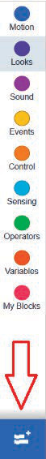
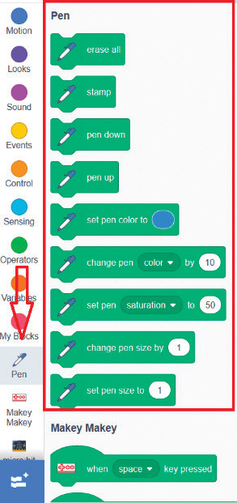
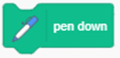
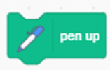
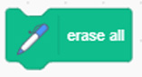

Pen extension follow the following steps.
-
1.
Click the Add Extension icon at the bottom left corner. See Figure 13 (a).
-
2.
Click the Pen extension to add it to your programming palette. See Figure 13 (b).

(a)

(b)
Examples of blocks from the Pen extension are:
-
(a)

This allows your sprite to start drawing as it moves.
-
(b)

This lifts the pen up so your sprite can move without drawing.
-
(c)

This removes all marks made by the pen or stamping.